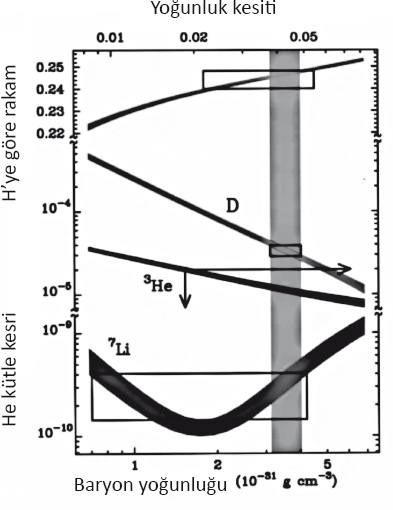
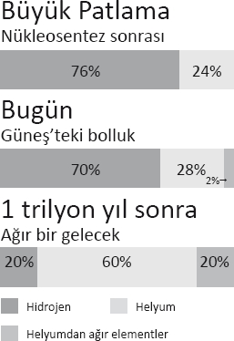

Gelecek eskisi gibi değil.
Yogi Berra
Kendimizi hiçliğin hakimiyetindeki bir evrende bulmak bir anlamda hem ilginç hem heyecan verici. Yıldızlar ve galaksiler gibi görebildiğimiz yapıların hepsi de hiçlikten kuantum dalgalanmalarıyla yaratılmıştır. Evrenimizdeki her nesnenin ortalama toplam kütleçekim enerjisi de hiçe eşittir. Canınız isterse bu düşüncenin keyfini çıkarmaya bakın, çünkü bütün bunlar doğruysa belki de yaşanabilecek en kötü evrende yaşıyoruz, en azından hayatın geleceği açısından.
Unutmayalım, Einstein'ın Genel Görelilik Kuramı'nı geliştirmesinin üzerinden bir asır ya geçti ya geçmedi. O zamanki genel geçer mantık evrenimizin durağan ve ebedi olduğunu söylüyordu. Aslına bakarsanız Einstein, Büyük Patlama'yı ileri sürdüğü için Le Maître'i alaya almakla kalmamış, durağan bir evreni mümkün kılsın diye Kozmolojik Sabit'i de icat etmişti.
Şimdi, ondan bir asır sonra, biz bilim insanları evrenin genişlediğini, Kozmik Mikrodalga Geri Plan Işınımı'nı, karanlık maddeyi ve karanlık enerjiyi keşfettiğimiz için kendimizle gurur duyabiliriz.
Ama gelecek neler getirecek?
Şiir... Bir tür.
Evrenimizin genişlemesine görünürde boş olan uzayın enerjisinin hakim olduğunun, bu genişlemenin hızlandığı gerçeğinden hareketle çıkarsandığını hatırlayalım. Tıpkı geçen bölümde anlattığımız Şişme'de olduğu gibi, gözlenebilir evrenimiz ışık hızından hızlı bir biçimde genişlemenin eşiğindedir. Genişlemenin ivme kazanması yüzünden de işler daha da beter olacaktır.
Bu da ne kadar uzun süre beklersek, o kadar az şey görebileceğimiz anlamına geliyor. Bugün görebildiğimiz galaksiler gelecekte bir gün bizden ışıktan daha hızlı uzaklaşıyor olacaklar, bu da onları göremeyeceğimiz anlamına geliyor. Saldıkları ışık, uzayın genişlemesi karşısında ilerleme kaydedemeyecek ve bir daha bize ulaşmayacak. Bu galaksiler ufkumuzdan silinip gitmiş olacaklar.
Bunun gerçekleşme biçimi düşünebileceğinizden biraz farklıdır. Galaksiler birden kaybolmayacak ya da geceleyin gökyüzünde birdenbire sönüvermeyecekler. Uzaklaşma hızları ışık hızına yaklaşırken, onlardan gelen ışık daha fazla kırmızıya kayacak. Nihayetinde galaksilerin görünebilir ışıkları kızılaltı ışınlara, mikrodalgaya, radyo dalgasına vs.'ye dönecek ve görünebilir evrenin boyutlarından daha büyük boyutlara ulaşacak, bu noktada da galaksiler resmen görünmez olacaklar.
Bunun yaklaşık olarak ne kadar zamanda gerçekleşeceğini hesaplayabiliyoruz. Bizim yerel galaksi topluluğumuzdaki galaksilerin hepsi de karşılıklı kütleçekimle birbirlerine bağlı olduklarından, bu galaksiler, Hubble'ın keşfettiği üzere evrenin geri plandaki genişlemesiyle bizden uzaklaşmayacaklar.
Bizim grubumuzun hemen dışındaki galaksiler, nesnelerin uzaklaşma hızının ışık hızına yaklaştığı noktaya olan mesafenin yaklaşık olarak 5000'de 1'i kadar bir mesafede bulunuyor. Bu galaksilerin o noktaya ulaşması 150 milyar yıl, evrenin bugünkü yaşının 10 katı kadar bir zaman alacak, o noktada galaksilerin içindeki yıldızlardan gelen ışığın tamamı yaklaşık olarak 5000 kat kırmızıya kaymış olacak. Yaklaşık olarak 2 trilyon yıl içindeyse, ışıkları, dalgaboyları görünebilir evrenin boyutlarına eşit olacak miktarda kırmızıya kaymış olacak, evrenin geri kalanı da kelimenin tam anlamıyla ortadan kaybolmuş olacak.
İki trilyon yıl uzun bir süre gibi görünebilir, öyledir de. Ama kozmik bir anlamda, sonsuzluğun yanında solda sıfır kalır. En uzun ömürlü (bizim Güneş'imizle aynı evrim tarihinden geçmiş) "ana sekans" yıldızlarının ömürleri Güneş'imizin ömründen çok çok daha uzundur, bu yıldızlar 2 trilyon yıl sonra hâlâ parlıyor olacaklardır (ama bizim Güneş'imiz 5 milyar yıla kalmadan sönecektir). Bu yüzden de uzak gelecekte bu yıldızların çevresindeki gezegenlerde, güneş enerjisiyle yaşayan, su ve diğer organik maddelerin bulunduğu medeniyetler bulunabilir. Bu gezegenlerde teleskopları olan astronomlar olabilir. Ama kozmosa baktıklarında, bugün görebildiğimiz her şey, görünebilir evrenimizde bulunan 400 milyar galaksinin tamamı ortadan kaybolmuş olacaktır!
İşte bu argümana dayanarak, henüz gözleyebileceğimiz ne varsa gözlemeye vaktimiz varken kozmoloji çalışmaları bir an önce finanse edilsin diye Kongre'ye uyarıda bulunmuştum! Gelgelelim bir kongre üyesi için iki yıl uzun bir süredir. İki trilyon ise akla hayale sığmaz.
Her halûkârda uzak geleceğin astronomları neler kaçırdıklarını bilebilseler büyük bir şaşkınlığa uğrarlardı, ama bilemeyecekler. Çünkü benim ve Vanderbilt Üniversitesi'nden meslektaşım Robert Scherrer'ın birkaç yıl önce fark ettiği üzere evrenin geri kalanı gözden kaybolmakla kalmayacak, bir Büyük Patlama'yla doğmuş, genişleyen bir evrende yaşadığımızı söyleyen kanıtların tamamı da ortadan kaybolacak, bu kaybolmanın sorumlusu olan boş uzaydaki karanlık enerjinin varlığına dair bütün kanıtlar da tabii.
Bir asırdan kısa bir süre önce genel geçer mantığa göre evren durağan ve ebediydi, gezegenler geliyor gidiyordu, ama geniş ölçeklerde evrenin kendisi olduğu gibi duruyordu. Gelecekte, gezegenimiz ve medeniyetimizden geri kalan ne varsa hepsinin tarihin çöplüğünü boylamasından çok çok sonra, medeniyetimizi 1930'lara kadar getiren bu illüzyon, öyle görünüyor ki geri dönecektir, öç almak için.
Büyük Patlama'ya ampirik olarak geçerlilik kazandıran temel sütun niteliğinde üç gözlem bulunmaktadır, bu demektir ki Einstein ile LeMaître hiç yaşamamış olsalar bile evrenin sıcak, yoğun bir halde başladığını şu veya bu şekilde kabul etmek zorunda kalacaktık. Bu üç gözlem şunlardır: Gözlenen Hubble genişlemesi, Kozmik Mikrodalga Geriplan Işınımı'nın gözlenmesi, evrende hafif elementlerin -hidrojen, helyum ve lityum- ölçtüğümüz bolluğu ile tahminlere göre bu elementlerin evrenin tarihinin ilk birkaç dakikasında ortaya çıkan miktarı arasındaki uyuşma.
Hubble genişlemesiyle başlayalım. Evrenin genişlediğini nereden biliyoruz? Uzak nesnelerin uzaklaşma hızlarını mesafelerinin fonksiyonu olarak ölçüyoruz. Gelgelelim (kütleçekimsel olarak bağlı olduğumuz) yerel topluluğumuzun dışındaki bütün görünebilir nesneler ufkumuzdan silinip gittiklerinde genişlemenin izini sürebileceğimiz ipucu da kalmayacak, gözlemcilerin izleyebileceği ne bir yıldız, ne bir galaksi, ne bir kuasar ne de büyük bir gaz bulutu kalacak. Genişleme o kadar etkili olacak ki halihazırda bizden uzaklaşmakta olan bütün nesneleri görüş mesafemizden çıkaracak.
Üstelik, yaklaşık olarak bir trilyon yılı bulmayan bir zaman diliminde, yerel grubumuzdaki bütün galaksiler birleşerek büyük bir galaksi oluşturacak. Uzak gelecekteki gözlemciler, az çok, 1915'teki gözlemcilerin gördüklerini düşündükleri şeyi görecekler: Yıldızlar ve gezegenlerin bulunduğu, bomboş, durağan uzayla çevrelenmiş tek bir galaksi.
Ayrıca şunu da hatırlayalım: Boş uzayın enerjisi olduğu yolundaki kanıtların tamamı, genişleyen evrenimizin genişleme hızının artışına dair gözlemlerden elde edilmiştir. Ama yine, genişlemenin izini sürmeyi sağlayacak ipuçları olmaksızın, genişleyen evrenimizin ivmelenmesi gözlenemez olacaktır. İlginç bir tesadüf ama, bizler evrenin tarihinde, boş uzaya nüfuz etmiş karanlık enerjinin varlığının tespit edilebileceği yegane dönemde yaşıyoruz. Bir dönem birkaç milyar yıl sürer, doğru, ama ebediyen genişleyen bir evrende bu süre kozmik bir göz açılıp kapanıncaya kadar geçip gider.
Boş uzayın enerjisinin kabaca sabit olduğunu varsayarsak, kozmolojik bir sabit olması halinde olacağı gibi, daha önceki tarihlerde madde ve ışınımın enerji yoğunluğu boş uzaydaki enerjiyi çok çok aşardı. Bunun sebebi, evren genişledikçe madde ve ışınım yoğunluğunun genişlemeyle birlikte, parçacıklar arasındaki mesafe arttığı, her hacimde daha az nesne bulunduğu için azalmasıdır. Daha önceki devirlerde, diyelim ki 5-10 milyar yıl önce madde ve ışınımın yoğunluğu bugün olduğundan daha fazla olacaktı. Bu yüzden şimdi ve daha önceki devirlerde evrene, kütleçekimsel kuvvetleri olan madde ve ışınım hakim olmuştur. O ilk devirlerde evrenin genişlemesi yavaşlıyordu, boş uzaydaki enerjinin kütleçekimsel enerjisi ise bu yüzden gözlenemez durumda olsa gerekti.
Aynı nedenden, uzak gelecekte, evren birkaç yüz milyar yaşındayken, madde ve ışınımın yoğunluğu çok çok daha azalacak, karanlık enerjinin ortalama yoğunluğunun evrende mevcut bütün madde ve ışınımın yoğunluğundan milyonlarca kat daha büyük olduğu hesaplanabilir olacaktır. O uzak gelecekte evrenin kütleçekim dinamikleri, geniş ölçeklerde, karanlık enerjinin hakimiyetinde olacaktır. Ne var ki o uzak çağda, hızlanmış olan genişleme de esasen gözlenemez hale gelecektir. Bu anlamda, boş uzayın enerjisi, niteliği yüzünden, gözlenebilir olduğu sonlu bir zaman olduğunu söyler; dikkat çekicidir ki bizler de o kozmolojik zaman diliminde yaşıyoruz.
Peki Büyük Patlama'nın diğer temel sütunu? Evrenin bebeklik fotoğrafını doğrudan sunan Kozmik Mikrodalga Geriplan Işınımı? Öncelikle gelecekte evren çok daha hızlı genişleyeceğinden Kozmik Mikrodalga Geriplan Işınımı'nın ısısı da düşecektir. O zaman gözlenebilir evren bugün olduğundan yaklaşık 100 kat daha büyük olacağı için, Kozmik Mikrodalga Geriplan Işınımı'nın ısısı da 100 faktör azalacak, yoğunluğu, yani içinde depolanan enerjinin yoğunluğu da 100 milyon faktör düşecek, bu yoğunluğu belirlemek bugün olduğundan 100 milyon kat daha zorlaşacaktır.
Ama nihayetinde Dünya üzerindeki başka bütün elektronik gürültüler arasında Kozmik Mikrodalga Geriplan Işınımı'nı tespit edebildik, uzak gelecekteki gözlemcilerin bugün bize lutfedilenlerden 100 milyon kat daha akıllı olabileceğini hayal edebiliriz, yani bütün umutlarımızı kaybetmiş değiliz. Ne var ki uzak gelecekte insanın düşünebileceği en parlak gözlemci, yapılabilecek en duyarlı aygıtlarla çalışsa bile esasen talihsiz olacak. Çünkü galaksimizde (ya da bizim galaksimiz beş milyon yıl sonra en başta Andromeda'yla olmak üzere komşularıyla birleştiğinde oluşacak meta-galakside) yıldızlar arasında sıcak gaz vardır ve bu gaz iyonize olmuştur, öyle ki içinde serbest elektronlar vardır, bu yüzden de bir plazma gibi davranır. Daha önce betimlediğim üzere böyle bir plazma birçok ışınım tipini yansıtmaz, mattır.
"Plazma frekansı" denilen bir şey vardır, bunun altında ışınım emilmeksizin bir plazmaya giremez. Galaksimizdeki serbest elektronların halihazırda gözlenen yoğunluğuna dayanarak galaksimizdeki plazma frekansını tahmin edebiliriz, bunu yaptığımızda Büyük Patlama'dan gelen Kozmik Mikrodalga Geriplan Işınımı'nın büyük bölümünün, evren bugünkü yaşının yaklaşık elli katına ulaştığında gerilip o sırada meta-galaksimizin plazma frekansının altında kalacak kadar uzun dalgaboylarına, dolayısıyla düşük frekanslara ulaşacaktır. Bundan sonra ışınımın (meta)galaksimize girip gözlenmesi esasen mümkün olmayacaktır, gözlemci ne kadar titiz olursa olsun. Kozmik Mikrodalga Geriplan Işınımı da kaybolacaktır.
Dolayısıyla evrenin genişlemesi gözlenemeyecektir, Büyük Patlama'dan arta kalan bir pırıltı olmayacaktır. Peki ya yine Büyük Patlama'nın doğrudan bir imzasını oluşturan hafif element (hidrojen, helyum ve lityum) bolluğuna ne olacaktır?
Birinci bölümde anlatmıştım: Ne zaman Büyük Patlama'ya inanmayan biriyle karşılaşsam onlara cüzdanımda kart olarak taşıdığım şu aşağıdaki şekli göstermeye bayılıyorum. Sonra da "Bakın! Büyük Patlama oldu!" diyorum.

Bu şekil çok karmaşık görünüyor, biliyorum, ama aslında halihazırdaki Büyük Patlama anlayışımıza dayanarak hidrojene nazaran helyum, deteryum, helyum-3 ve lityumun tahmin edilen göreli bolluğunu gösteriyor. Yukarıda, sağa doğru yükselen eğri tahmin edilen helyum bolluğunu gösteriyor. Helyum evrende, ağırlığı itibarıyla, hidrojenden (en bol element) sonra ikinci bol elementtir. Ondan sonraki sağa doğru aşağı inen iki eğri sırasıyla tahmin edilen deteryum ve helyum-3 bolluğunu gösteriyor, ağırlık değil de hidrojene kıyasla atomlarının sayısı itibarıyla. Son olarak en alttaki eğri bir sonraki hafif elementin, lityumun tahmin edilen bolluğunu yine atom sayısı itibarıyla temsil ediyor.
Elementlerin tahmin edilen bolluğu, bugün evrendeki (atomlardan oluşan) normal maddenin varsayılan toplam yoğunluğunun bir fonksiyonu olarak düşünülür. Bu nicelikteki değişiklikler, tahmin edilen bütün element miktarlarının gözlemlerimize uygun bir bileşimini oluşturmamış olsaydı, sıcak bir Büyük Patlama'da oluştukları tezine karşı güçlü bir kanıt bulmuş olurduk. Unutmayalım ki bu elementlerin tahmin edilen miktarı hemen hemen 10 büyüklük düzeni kadar farklılık gösterebilir.
Eğrilerin her biriyle ilişkilendirilmiş gölgelendirilmemiş kutular, galaksimizin içi ve dışındaki eski yıldızlar ve sıcak gazla ilgili gözlemlerimize dayanarak bu elementlerin fiilen tahmin edilen ilk miktarının, hangi yelpazeye yayılabileceğini gösterir.
Gölgeli dikey şeritse bütün tahminler ve gözlemlerin uyuştuğu bölgeyi temsil eder. Bütün hafif elementlerin ortaya çıktığı, çok erken zamanlarda gerçekleşmiş sıcak bir Büyük Patlama'nın, tahmin edilen miktarları 10 büyüklük düzeninde farklılıklar gösteren elementlerle ilgili tahminler ve gözlemler arasındaki bu uyuşmadan daha somut bir kanıtla desteklenmesi zordur.
Bu dikkat çekici uyuşmanın ne anlama geldiğini daha kuvvetle vurgulayarak tekrarlamakta yarar görüyorum: Gece gökyüzünü dolduran yıldızların yapıtaşları olduğu sonucuna vardığımız hafif elementler hidrojen ve deteryum, helyum ve lityumun bolluğunu kesin olarak üretebilecek nükleer tepkimeler, ancak ve ancak bugün görünebilen galaksilerde maddenin gözlenen yoğunluğuna çok yaklaşan bir ilk proton ve nötron bolluğuyla ve bugün Kozmik Mikrodalga Geriplan Işınımı'nın gözlenen yoğunluğuna tam olarak denk düşen bir kalıntı bırakan bir ışınım yoğunluğuyla gerçekleşen sıcak bir Büyük Patlama'nın ilk saniyelerinde ortaya çıkmıştır.
Einstein'ın da söyleyebileceği gibi ancak ve ancak çok kötücül (dolayısıyla da ona göre tahayyül edilemez bir Tanrı) böyle bir şeye sebep olmaksızın, bu kadar açık bir şekilde kökeninde bir Büyük Patlama'nın yattığına işaret eden bir evren yaratabilir.
Aslına bakarsanız, çıkarsanan helyum bolluğuyla Büyük Patlama'dan kaynaklanan tahmini helyum bolluğu arasındaki kaba uyuşmanın 1960'larda ilk kez gösterilmesi, Büyük Patlama tablosunun, o zamanlar Fred Hoyle ve meslektaşlarının başını çektiği, o zamanlar çok popüler olan durağan haldeki evren modeline karşı zafer kazanmasını sağlayan kilit önemdeki verilerden biri olmuştu.
Ne var ki uzak gelecekte işler hayli farklı olacaktır. Örneğin yıldızlar hidrojen yakar ve helyum üretirler. Bugün evrende gözlenen bütün helyumun yaklaşık yüzde 15'i Büyük Patlama'dan bu yana geçen zaman içinde yıldızlar tarafından üretilmiş olabilir. Bu da gördüğümüz şeyin ortaya çıkması için bir Büyük Patlama'nın gerçekleşmiş olması gerektiği yolunda zorlayıcı bir kanıttır. Gelgelelim uzak gelecekte böyle bir şey söz konusu olmayacaktır, çünkü kuşaklarca yıldız yaşayıp ölmüş olacaktır.
Örneğin evren üç trilyon yaşına geldiğinde yıldızlarda Büyük Patlama'da ortaya çıkandan çok daha fazla helyum üretilmiş olacaktır. Bu durum aşağıdaki tabloda gösteriliyor:

Görünen madde evreninin yüzde 60'ı helyumdan oluşuyorken, gözlemlerle bir uyuşmanın olması için ilk helyumun sıcak bir Büyük Patlama'da ortaya çıkmış olması zorunluluğu olmayacaktır.
Ne var ki uzak gelecekte bazı medeniyetlerdeki gözlemciler ve kuramcılar bu veriyi evrenin yaşının sonlu olduğunu çıkarsamak için kullanabileceklerdir. Yıldızlar hidrojen yakıp helyum çıkardıklarından ötürü, hidrojen ile helyum arasındaki oranın daha fazla erimemesi için uzun ömürlü yıldızların var olmasının bir üst sınırı olacaktır. Dolayısıyla gelecekteki bilim insanları yaşadıkları evrenin üç trilyon yıldan daha genç olacağı tahmininde bulunacaktır. Ne var ki gelecekteki tek (meta)galaksimizin en başta bir şekilde kendiliğinden yaratılmış olması yerine, başlangıçta bir Büyük Patlama olduğuna dair doğrudan bir imza olmayacaktır.
Unutmayalım ki LeMaître Büyük Patlama'ya dair iddiasını, Einstein'ın Genel Görelilik kuramı üzerine düşünerek geliştirmişti. Uzak gelecekteki gelişmiş herhangi bir uygarlığın fizik kanunlarını, elektromanyetizmayı, kuantum mekaniğini ve genel göreliliği keşfedebileceğini varsayabiliriz. Uzak gelecekteki bir LeMaître de benzer bir iddiada bulunabilecek midir acaba?
LeMaître'in, evrenimizin Büyük Patlama'yla başlamak zorunda olduğu sonucuna varması kaçınılmazdı, ama bu sonuç uzak gelecekte gözlenebilir evren açısından geçerli olmayacak bir varsayıma dayanıyordu. Bütün yönlere tektip olarak yayılan maddeyle dolu, izotropik ve homojen bir evren, LeMaître ve nihayetinde Einstein'ın kabul ettiği gerekçeler yüzünden durağan olamaz. Ne var ki Einstein Denklemleri'nin boş, durağan bir uzayın çevrelediği tek bir büyük sistem için de son derece iyi bir çözümü vardır. Nihayetinde böyle bir çözüm mevcut değilse, genel görelilik nötron yıldızları ya da nihayetinde kara delikler gibi yalıtılmış nesneleri betimleyemezdi.
Galaksimiz gibi geniş kütle dağılımları kararsızdır, bu yüzden nihayetinde (meta)galaksimiz çöküp büyük bir kara delik oluşturacaktır. Bu durum Einstein'ın denkleminin Schwarzchild çözümü denilen durağan bir çözümüyle betimlenir. Fakat galaksimizin çöküp büyük bir kara delik oluşturma takvimi, evrenin geri kalanının kaybolmasının takviminden daha uzundur.
Dolayısıyla galaksimizin genişleyen bir evrenin içinde yer almasını gerektirmeksizin ve boş uzayda ciddi bir çöküş olmaksızın bir trilyon yıldır var olduğunu tahayyül etmek geleceğin bilim insanlarına doğal gelecektir.
Elbette ki gelecekle ilgili spekülasyonlarda bulunmak korkunç derecede zordur. Bu satırları aslında İsviçre'nin Davos kentinde, piyasaların gelecekteki davranışını tahmin eden ve korkunç derecede yanıldıklarını anladıklarında tahminlerini değiştiren ekonomistlerle dolu Dünya Ekonomik Forumu'nda bulunduğum sıralarda yazıyorum. Genel olarak şunu söyleyebilirim: Bilim ve teknolojinin uzak geleceğine, hatta o kadar da uzak olmayan geleceğine ilişkin tahminleri üzücü ve bilimin tahminlerinden daha uçuk buluyorum. Hatta bana bilimin yakın geleceğine, bir sonraki büyük atılımın ne olacağına dair sorular yöneltildiğinde, bilseydim, üzerinde çalışıyor olurdum cevabını yapıştırıveriyorum.
Yani, bu bölümde sunduğum tabloyu, Dickens'ın A Christmas Carol adlı kitabında üçüncü hayaletin sunduğu gelecek tablosuymuş gibi düşünmeyi seviyorum. Bu olabilecek bir gelecek. Nihayetinde, boş uzaya yayılmış karanlık enerjinin ne olabileceğine dair bir fikrimiz olmadığından, Einstein'ın Kozmolojik Sabiti gibi davranıp davranmayacağını, sabit kalıp kalmayacağını da kesin olarak bilemeyiz. Sabit kalmazsa evrenin geleceği çok daha farklı olabilir. Genişleme ivmelenmeye devam etmeyip bir kez daha zamanla yavaşlama sürecine girebilir, böylece uzaktaki galaksiler de kaybolmaz. Belki de bugün henüz tespit edemediğimiz, ama gelecekte astronomlara bir zamanlar bir Büyük Patlama olduğuna dair kanıtlar sunabilecek, gözlenebilir yeni nicelikler olabilir.
Yine de bugün evren hakkında bildiğimiz her şeye dayanarak çizdiğim gelecek tablosu en akla yatkın tablodur; mantık, akıl ve amprik verilerin yine de bir şekilde, geleceğin bilim insanlarını evrenimizin temel niteliklerini doğru olarak çıkarsamaya yöneltip yöneltmeyeceğini, yoksa bu niteliklerin ebediyen ufkun ötesinde gizli mi kalacağını düşünmek büyüleyicidir. Kuvvetlerin ve parçacıkların temel niteliklerini araştıran parlak bir bilim insanı Şişme'nin olması gerektiğini ya da boş uzayda enerji olması gerektiğini ileri sürecek, görünebilir ufukta neden hiç galaksi olmadığını açıklayabilecek kuramsal bir tablo da geliştirebilir. Ama bu konuda çok da umutlu değilim.
Nihayetinde fizik deneyler ve gözlemlerle ilerleyen ampirik bir bilimdir. Karanlık enerjinin varlığını gözlemlerimize dayanarak çıkarsamış olmasaydık bunu ileri sürecek kadar cesur bir kuramcı korkarım bugün çıkmazdı. Büyük Patlama'nın gerçekleşmemiş olduğu durağan bir evrende tek bir galaksi tablosunda birşeylerin yanlış olabileceğine dair somut bazı işaretler (belki de elementlerin miktarlarının anormal göründüğü sonucuna varan gözlemler gibi) tahayyül etmek mümkün olsa da Occam'ın kılıcının en basit tablonun en doğrusu olduğunu, anormal gözlemlerin bazı yerel etkilerle açıklanabileceğini ileri süreceğine dair kuşkularım var.
Bob Scherrer ile benim, geleceğin bilim insanlarının yanlışlanabilir veri ve modeller kullanacağını (iyi bilimin ideali) ama bu süreçte evrenin hatalı bir tablosunu ortaya çıkaracaklarını ortaya koyduğumuzdan bu yana, birçok meslektaşımız evrenin uzak gelecekte aslında genişliyor olacağını araştırmanın çeşitli yollarını ileri sürmeye çalıştılar. Ben de olası deneyleri düşünebiliyorum. Ama bunların ardındaki itkinin yeterli olacağını göremiyorum.
Örneğin galaksimizdeki parlak yıldızların evrenin olası genişlemesinden etkilenip etkilenmediğini araştırabilmek için, bu yıldızların galaksimizden çıkarılıp uzaya gönderilmesi, sonra yaklaşık bir milyar yıl patlamalarının beklenmesi, ardından patlamadan önce ulaştıkları mesafenin bir fonksiyonu olarak gerileme hızlarının gözlenmesi gerekir. İddialı, ama böyle bir şeyin gerçekleştiğini hayal edebilseniz bile, geleceğin Ulusal Bilim Vakfı'nın evrenin genişliyor olduğunun savunulması lehine bir başka saik olmaksızın bu deneyi finanse edeceğini sanmıyorum. Galaksimizdeki yıldızlar bir şekilde çıkarılsa, ufka doğru hareket ederken belirlenebilseler bile bu nesnelerin bazılarının anormal bir biçimde ivme kazandığı yolundaki gözlemlerin, karanlık enerjinin hakimiyetindeki genişleyen bir evren gibi cesur ve tuhaf bir varsayım bağlamında yorumlanıp yorumlanamayacağı bana pek açık görünmüyor.
Şu anda hayatta olduğumuz için kendimizi şanslı görebiliriz. Yani Bob ve benim kaleme aldığımız bir makalede dile getirdiğimiz üzere: "Çok özel bir devirde yaşıyoruz... Çok özel bir devirde yaşadığımızı gözlemsel olarak doğrulayabileceğimiz tek devirde!"
Biraz nükteli konuşmuştuk, ama insanın elindeki en iyi gözlem aygıtlarını ve kuramsal araçları kullanıp yine de evrenin geniş ölçekte tamamen hatalı bir tablosunu çizebileceğini öne sürmek ciddiye alınası bir şeydir.
Yine de eksik veriler yanlış bir tabloya yol açabilirse de bu, gerçeklikle ilgili kanıtlarımıza ters düşen (genç dünyalılar örneğinde olduğu gibi) bir yaratılış tablosu uydurmak üzere ampirik verileri görmezden gelmeyi tercih edenlerin ya da kendi yaratılış görüşlerini önyargılarıyla uzlaştırmak için ilahi zeka gibi hakkında gözlenebilir hiçbir kanıt bulunmayan bir şeyin varlığını gereksinenlerin, daha da beteri doğa hakkında, sorular sorulmadan cevapları varsayabilen peri masallarına asılıp kalanların ulaştığı (hatalı) tablodan çok farklıdır. En azından geleceğin bilim insanları tahminlerini ellerindeki en iyi kanıtlara dayandırıyor, hepimizin ya da en azından bilim insanlarının yaptığı gibi yeni kanıtların gerçekliğin temel tablosunda değişiklikler yapmamıza yol açabileceğini kabul edeceklerdir.
Bu noktada, 10 milyar yıl önce ya da 100 milyar yıl sonra yaşamış olsak gözleme imkanı bulabileceğimiz bir şeyleri, bugün kaçırıyor olduğumuzu söylemekte yarar var. Yine de Büyük Patlama'yla ilgili genel tablonun her alandan gelen verilerle, genel özellikleri itibarıyla geçersizliği kanıtlanamayacak kadar sıkı bir biçimde desteklendiğini vurgulamam gerekiyor. Ne var ki uzak geçmişin, uzak geleceğin ya da Büyük Patlama'nın kökenine ilişkin incelikli ayrıntıların ve Büyük Patlama'nın uzaydaki olası benzersizliğinin yeni ve nüanslı bir biçimde anlaşılması yeni verilerle kolayca birleşebilir. Aslında umarım birleşir de... Evrendeki hayatın ve zekanın gelecekteki olası sonundan çıkarabileceğimiz derslerden biri de iddialarımızda biraz kozmik tevazu bulunması gerektiğidir, böyle bir şey kozmologlar için zor olsa da.
Hangisi olursa olsun, biraz önce anlattığım senaryonun, aynı derecede trajik olmakla birlikte şiirsel bir yanı vardır. Uzun yıllar sonra gelecekte bilim insanları geçen yüzyılın başında elimizde olan, kozmolojideki modern devrimlere yol açan araştırmaları tetikleyen evren tablosunu hatırlatan bir evren tablosunu ortaya çıkaracaklardır. Kozmoloji tam bir devri tamamlayacaktır. Şahsen ben bunu çok dikkat çekici buluyorum, bazılarının Güneş'in altında geçirdiğimiz kısa anın nihai verimi olarak görebileceği şeyin altını çiziyor olsa da.
Ne olursa olsun, kozmolojinin gelecekteki olası son bulma biçiminin resmettiği temel sorun, test edebileceğimiz bir tek evren olmasıdır, o da içinde yaşadığımız evrendir. Ama onu sınarken, bugün gözlediğimiz evrenin nasıl ortaya çıktığını anlama umudumuz olsun istiyorsak da hem ölçebileceklerimiz hem de verileri yorumlama biçimimiz açısından sınırlılıklarla karşı karşıyayız.
Birçok evren varsa, bir şekilden birden fazlasını araştırabilirsek, hangi gözlemlerin gerçekten önemli ve temel önemde olduğunu, hangilerinin sırf içinde bulunduğumuz koşullar yüzünden ortaya çıktığını öğrenme şansımız artar.
Biraz sonra göreceğimiz üzere, ikinci olasılık muhtemel değilse de ilk olasılık muhtemeldir, bilim insanları da evrenimizin beklenmedik ve tuhaf özelliklerine dair kavrayışımızı ilerletecek yeni testler ve yeni öneriler için bastırmaktadır.
Ne var ki ilerlemeden önce, burada sunduğum olası geleceğin daha edebi, bu konunun kitabıyla yakından ilgili bir başka tablosuyla bitireyim. Christopher Hitchens'ın biraz önce betimlediğim senaryoya verdiği cevapta yatıyor bu tablo: "Birşey Evreni'nde yaşamamızı dikkat çekici bulanlar, bekleyin. Hiçlik doğruca bizimle çarpışmaya doğru ilerliyor!"